reviewTreemap() displays category frequencies as nested
rectangles whose area is proportional to the count — a compact
alternative to a bar chart when you have many categories or a second
grouping level. It requires the treemapify package.
This article walks through every argument of
reviewTreemap(data, col, color_by = NULL, sep = "\r\n", colors = PALETTE,
base_size = 12, na.rm = TRUE, na_label = "Not reported",
study_id = StudyID, studlabs = FALSE, border_col = "white")Default
Pass the data frame and a column. Column names may be bare or quoted. Each distinct value becomes one rectangle, sized by how often it occurs.
reviewTreemap(studies, Design)
col: the column to summarize
Any categorical column works. Multi-value columns — cells holding
several values separated by sep — are split
first, so each value is counted independently. Intervention
is such a column:
reviewTreemap(studies, Intervention)
Outcome is another multi-value column:
reviewTreemap(studies, Outcome)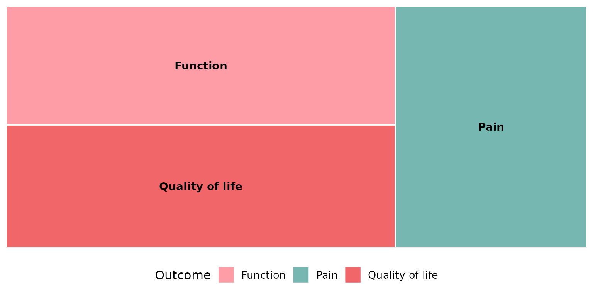
color_by: hierarchical grouping
Supplying color_by nests col inside a
higher-order column and colors the tiles by that grouping, with a
visible subgroup border. The classic pairing is interventions grouped by
their broader type:
reviewTreemap(studies, Intervention, color_by = InterventionType)
Without color_by (the default NULL),
rectangles are simply colored by col itself and there is no
grouping:
reviewTreemap(studies, Intervention)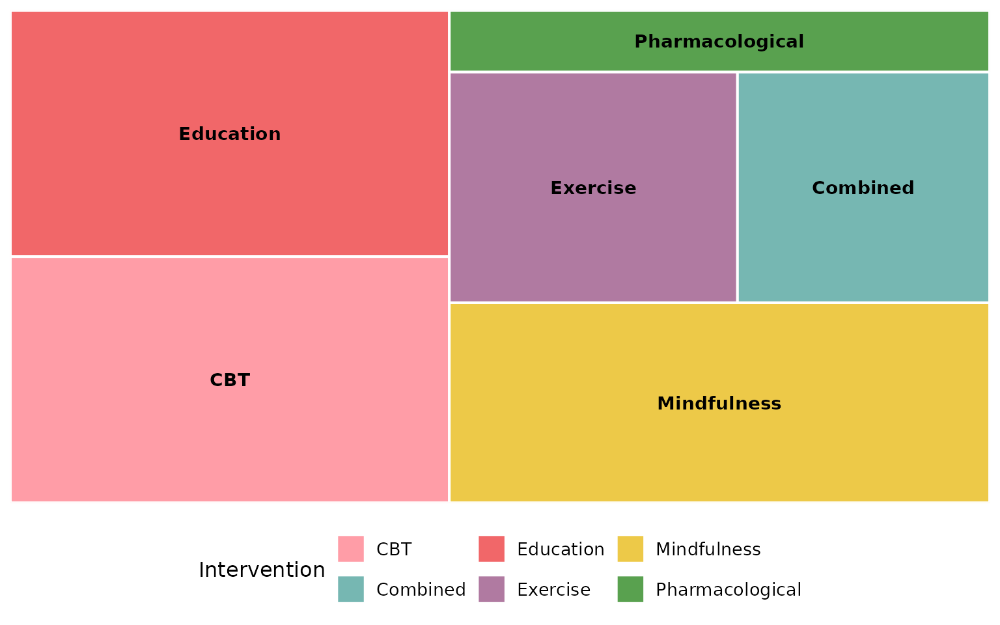
sep: multi-value separator
Multi-value cells are split on sep before counting. The
default "\r\n" matches the newline-separated cells in
studies (used above for Intervention and
Outcome). If your data uses a different delimiter, set
sep. Here we rebuild a semicolon-separated column to
demonstrate:
studies_semi <- studies
studies_semi$Intervention <- gsub("\r\n|\n", "; ", studies_semi$Intervention)
reviewTreemap(studies_semi, Intervention, sep = "; ")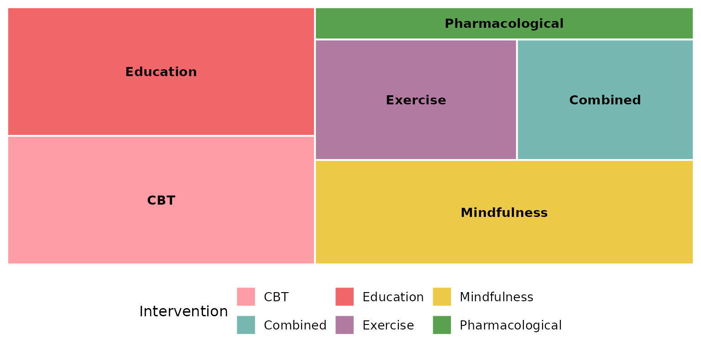
colors: the fill palette
By default tiles are filled from the package PALETTE, cycled to
cover the categories:
reviewTreemap(studies, Design, colors = PALETTE)Pass any vector of colors to use your own scheme (recycled if shorter than the number of tiles):
reviewTreemap(studies, Design,
colors = c("#59a14f", "#f28e2b", "#4e79a7", "#e15759", "#b07aa1"))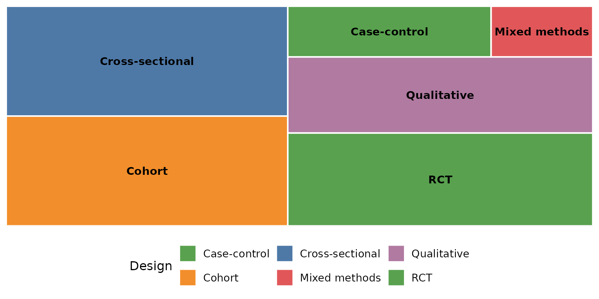
A named vector pins specific colors to specific categories:
reviewTreemap(studies, Design,
colors = c("Qualitative" = "#f16769",
"Cohort" = "#7ea9c7",
"RCT" = "#59a14f"))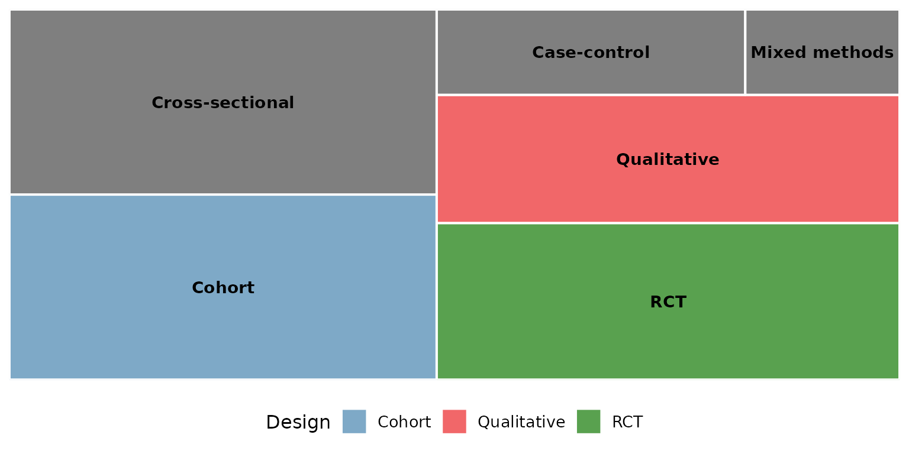
When color_by is set, colors maps onto the
grouping column instead:
reviewTreemap(studies, Intervention, color_by = InterventionType,
colors = PALETTE)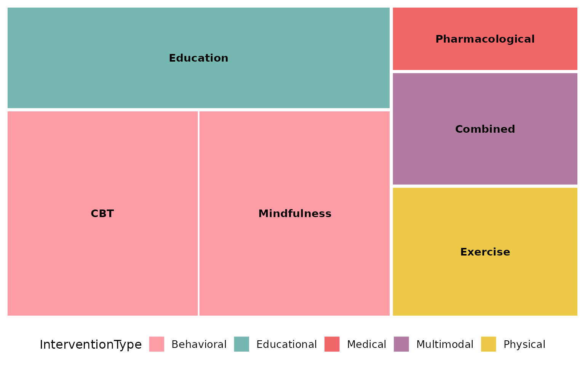
base_size: overall text and element scaling
A single knob scales the text (and border thickness) proportionally. Smaller, for multi-panel figures:
reviewTreemap(studies, Design, base_size = 9)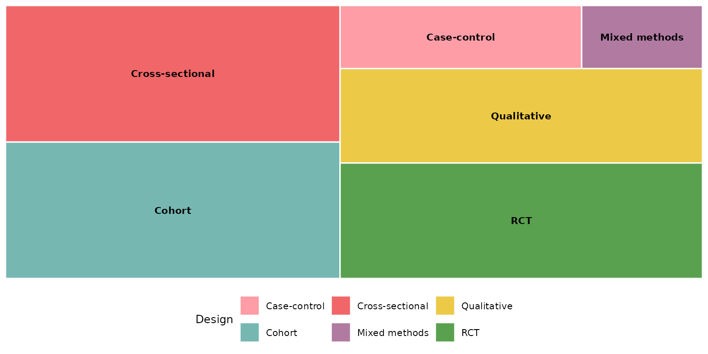
Larger, for slides or posters:
reviewTreemap(studies, Design, base_size = 18)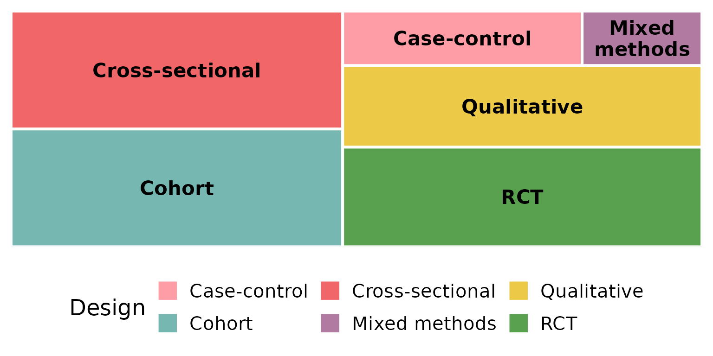
Missing data: na.rm and na_label
These two arguments control how NA (and empty) cells are
treated. We use a column that actually has missing values —
FundingSource.
By default na.rm = TRUE drops missing rows entirely, so
they contribute no rectangle:
reviewTreemap(studies, FundingSource)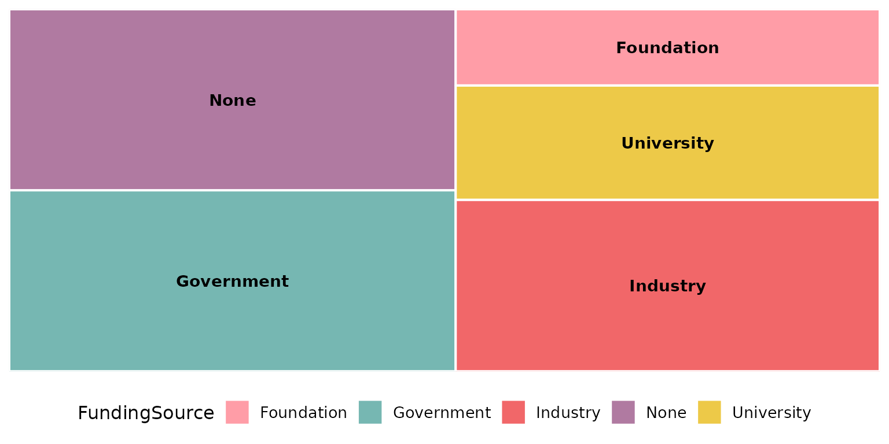
Keep the missing rows as their own tile with
na.rm = FALSE; na_label sets its name:
reviewTreemap(studies, FundingSource, na.rm = FALSE, na_label = "Not reported")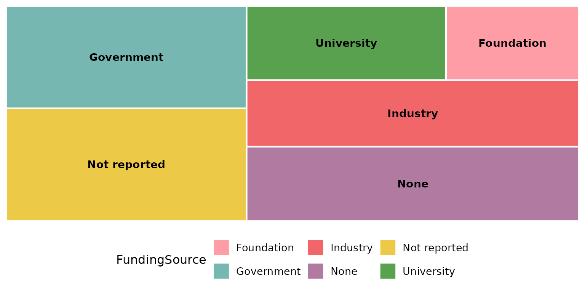
na_label accepts any string:
reviewTreemap(studies, FundingSource, na.rm = FALSE, na_label = "Unknown funding")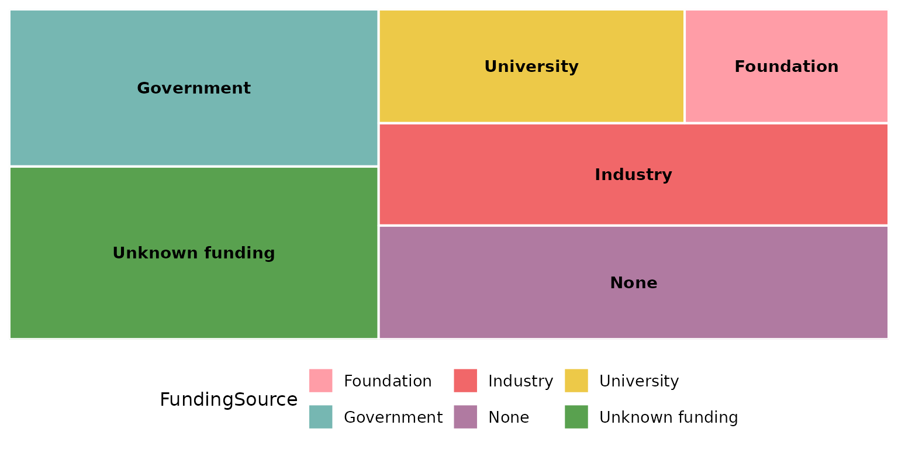
study_id and studlabs: label tiles with
study IDs
Set studlabs = TRUE to print the contributing study
identifiers inside each rectangle, beneath the category name. This
feature relies on the ggfittext package to fit the
text.
reviewTreemap(studies, Design, studlabs = TRUE)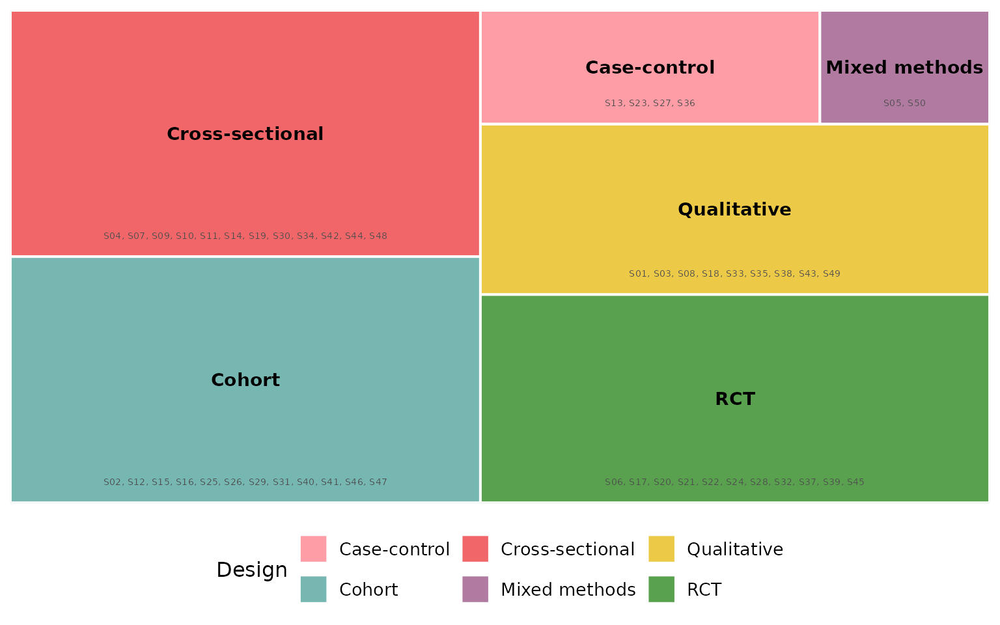
study_id selects which column supplies those identifiers
(default StudyID). Here we label with the author
instead:
reviewTreemap(studies, Design, studlabs = TRUE, study_id = Author)
border_col: rectangle border color
Borders separate adjacent tiles. The default is
"white":
reviewTreemap(studies, Design, border_col = "white")
A dark border reads well on light fills:
reviewTreemap(studies, Design, border_col = "grey20")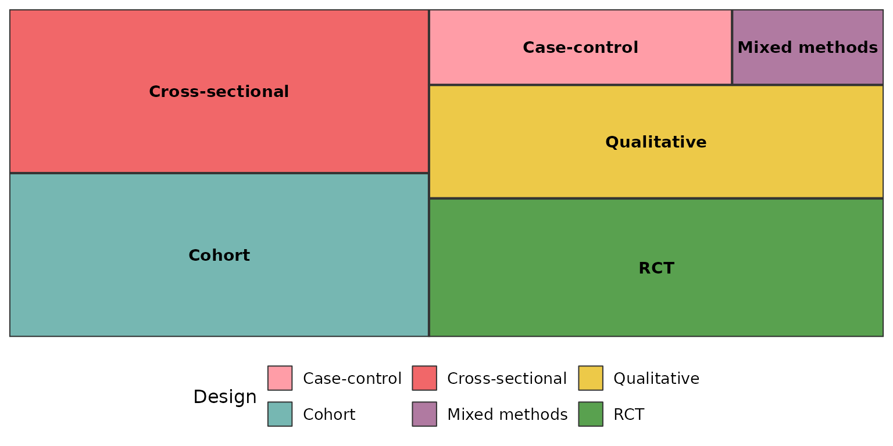
Pure black gives the strongest separation, and also outlines the
subgroups when color_by is used:
reviewTreemap(studies, Intervention, color_by = InterventionType,
border_col = "black")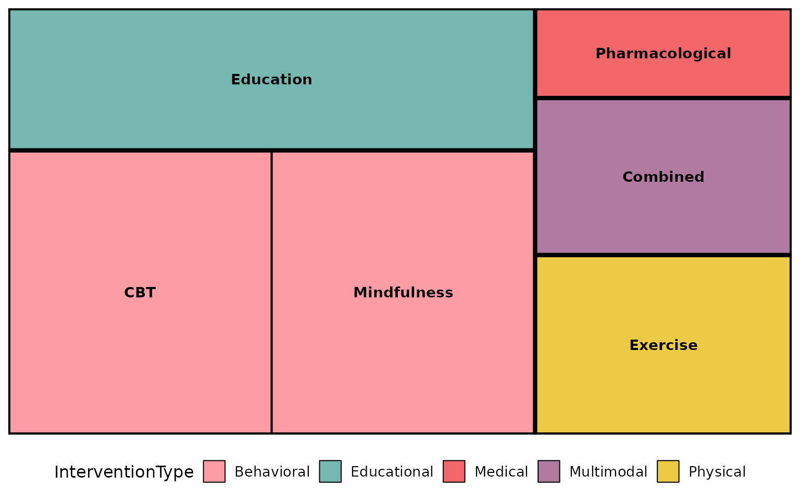
Composing with ggplot2
Every review*() function returns a plain ggplot, so you
can keep adding layers, scales, and labels with +:
reviewTreemap(studies, Design) +
labs(title = "Study designs", subtitle = "n = 50 studies",
caption = "Source: example dataset") +
theme(plot.title.position = "plot")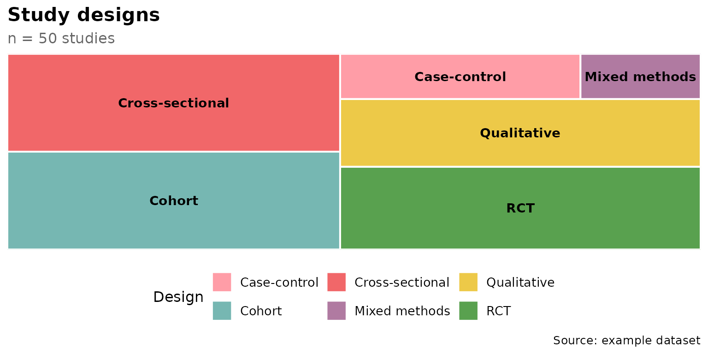